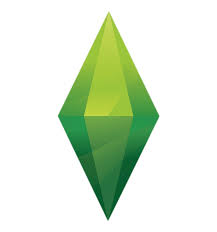

Overview
Ever find yourself wanting to play the role of God? If not, I have the solution, The Sims, a simulation game. You get to control every action, every interaction, how every single character looks and behaves, and more. You can choose whose relationships are going to make it through all the struggles and whose relationships are going to snap under the pressure. Put yourself into the game and give your life everything you could possibly want and more, marry your high-school sweetheart and start a family. Have a successful career, be the most popular person in town and rack in all the Simoleons, so you can buy the biggest, stylish house in the city!
Maybe good isn’t your gameplay style. Maybe you lean more towards evil or the drama, perhaps you have some devil horns poking out. The Sims will be perfect for you! You can create chaos and stir the pot. Imply a sim’s mother is a llama and decrease that friendship bar. Have a sim who thinks they are stronger than you? You can start a brawl and see who the winner is. Or, if you are feeling really evil, maybe you’re tired of your sim washing their dishes in the bathroom sink…just go into build mood and remove the ladder from the pool, sale the only door that is in the room and watch the Grim Reaper make his entrance!
A neat thing The Sims did create was “The Sims Stories”. They had three different ones you could get, “The Sims Life Stories”, “The Sims Pet Stories”, and “The Sims Castaway Stories”. It was released in 2007-2008, based on a modified version of The Sims 2 game engine. These offered us a very engaging story mode, which was filled with conflict, dramatic twists, rand romances. It did not have one set outcome, it all depended on the actions you took, even if some were forced by the game. They did still give us multiple endings, which is always a plus in my book because it gives more playability. But as of 2012, EA discontinued distribution and stopped selling The Sims Stories.
